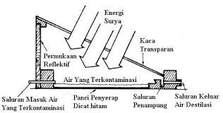

Aplikasi Refleksi
Proses refleksi oleh cermin sangat berguna bagi lingkungan yaitu sebagai proses destilasi atau penyulingan air laut sehingga air minum yang layak kita konsumsi sehari-hari
Alat destilasi air laut dibuat untuk memperoleh air tawar berupa alat reflector cermin cekung yag memanfaatkan panas matahari (energi surya). Reflektor cermin cekung diletakkan di atas tanah dan disinari langsung matahari. Kolektor yang berisi sampel air laut diletakkan di atas reflector tepat pada posisi titik focus untuk melakukan proses destilasi